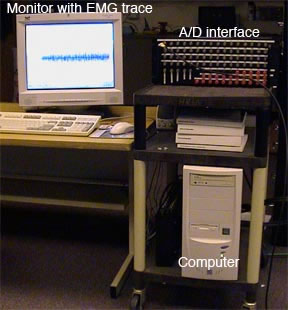
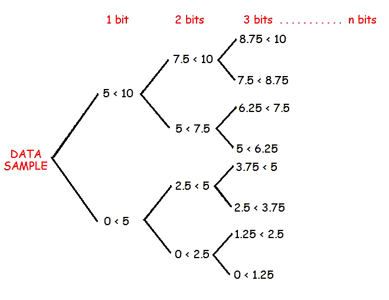
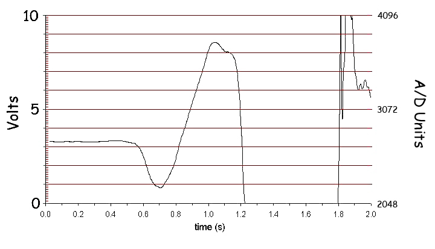
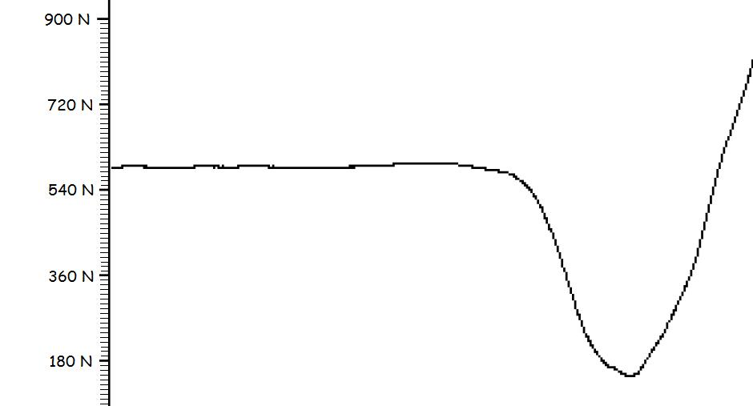
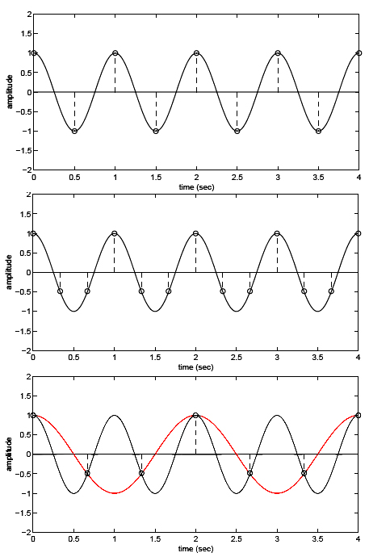
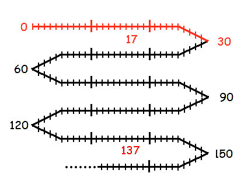
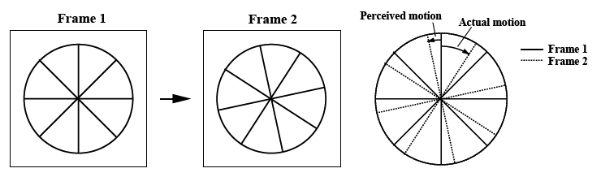

Signal Conditioning Lab
As mentioned in the Measurement Chain Lab, the measurement chain has a step called "Signal Conditioning". It was stated there that signal conditioning modified the output of the transducer to match the output display device. Sometimes the modification is simply an amplification such as increasing the EMG voltage so muscle activity can be displayed on a pen recorder. Since today's methods use computers for most calculations and even the display of signals, the conversion of the electrical output of the transducer to a digital file of numbers is one of the most common signal modifications and this will be covered in the first section. In biomechanics, we often want information that is not measured directly by the transducer such as velocity from video data or impulse from a force platform and the way we get the computer to differentiate and integrate will be covered in subsequent sections. Finally, it is important to realize that biomechanical signals have noise and often require filtering to improve the signal-to-noise ratio and this topic will covered in the "frequency domain processing" section.

Analog to Digital Conversion:
The output of
biomechanical
transducers is a continuous electrical signal called an analog signal.
In the early days of biomechanics, analog signals
from EMG,
force plate, elgons, etc. were amplified and displayed on
oscilloscopes.
Analog circuits were designed to perform these modifications
and
it
was even possible to differentiate and integrate the signals with
analog devices. Today, most signal conditioning and display
is
performed by a digital computer and requires the analog signal to be
converted to a digital file of numbers. Therefore,
a crucial step in signal processing is to
convert the analog signal to a digital signal. This process
is often called A/D conversion (pronounced A to D conversion).
In essence, an A/D converter acts like a very fast digital voltmeter. It captures the voltage at an instant in time, converts it to a number and stores it in a computer file. In a way, it is like a movie camera capturing an image frame and storing it on film. Since the A/D converter can only make measurements at discrete times, all of the information between the sample times is lost. Fortunately, computers are very fast and A/D converters can sample signals at very high rates to closely approximate the original continuous analog signal.

The resolution of the measurement depends on the number of binary decisions that the A/D converter can make. Computers are binary machines and every decision requires a single piece of information (1 bit). For example, let us consider an A/D converter that can measure voltages between zero and 10 volts. The first bit of information would tell the computer that the data sample is less than or greater than 5 volts. Once the computer knows this, a second bit would divide voltage again into four categories 0-2.5, 2.5-5.0, 5.0-7.5, and 7.5-10.0 volts. A third bit of information would create 8 categories and so on. For this reason, the resolution of an A/D converter is a binary number represented by 2n. A 12 bit A/D converter would have 212 = 4096 categories.
Force Platform Example:
The output from a force platform is an electrical signal that is proportional to the force applied to it. Let us assume that we want to send the vertical force data of a person performing a vertical jump into a computer for further analysis.

This graph is a computer plot of the data. The magnification or gain of the amplifier was set such that 2000 N of force was equal to 10 volts. Therefore, the sensitivity of the force platform was 200N/volt. A 12 bit A/D converter was used to sample the analog output from the force platform and the resolution of the A/D converter was 4096 units from -10 to +10 volts. An A/D unit of 1 corresponded to -10 volts and an A/D unit of 4096 corresponded to +10 volts. Since the output of the force plate was composed of positive voltages, only the upper half of the A/D converter was used. Also note that the impact forces of landing exceeded the 10 volt maximum range of the A/D converter and topped out. In this case, the investigators were only concerned with the take-off phase but if the impact forces of landing were important, they would need to reduce the amplification and sensitivity of the force platform to capture these larger forces. Since 2048 A/D units equal 10 volts and 2000 N, each A/D unit = 2000/2048 = 0.977 N. The fine ticks represent 1/10th of a volt which means there are over 20 A/D units between each fine tick on the graph which is very high resolution.
The figure below is a blow up and shows the resolution of the computer screen to be much lower than the digitized data. The resolution of the computer screen has about 5 Newtons for each pixel which less than a fifth of the resolution of the measured data.

The Sampling Theorem and Aliasing Errors
It was mentioned above that computers are very fast and A/D converters can sample signals at very high rates to closely approximate the original continuous analog signal. However, since there signal has discrete data points at certain points in time, all information between those discrete samples is lost. The sampling theorem states that a signal must be sampled at a rate that is more than twice the highest frequency component in the signal.

The top figure on the right shows a 1 Hz sine wave sampled at 2Hz. We can see that the peaks have been captured but even if the samples were not exactly at the peaks, the best fitting sine wave would match the actual 1Hz sine wave.
The middle graph shows the same signal sampled at 3 Hz. We can see that there are more than enough samples and that the best fitting sine wave matches the true 1Hz sine wave signal.
However, if we only sampled the signal at 1.5 Hz we would get the results in the bottom graph. The red line shows a perfect fit by a 0.5Hz sine wave. It turns out that signals above one half the sampling rate are not lost but distorted to appear as a lower frequency. This distortion is called an "aliasing" error and frequency that is one half the sampling rate is called the "Nyquist" frequency.

Some call the Nyquist frequency the "folding" frequency because the distortion folds all frequencies above one half the sampling rate over to the lower frequencies between 0 and the Nyquist frequency. The figure to the right shows how a signal sampled at 60 Hz can faithfully record signal components up to 30Hz and all higher frequencies are distorted (folded over) to look like lower frequencies. If we were to sample a 137 Hz sine wave at 60 samples per second, the data would appear to be a 17Hz sine wave.
Another example of aliasing is the appearance of wheels in movies rotating backward or slowly forward even though we know the vehicle is traveling quickly. The figure below shows a wagon wheel filmed as it rotates. The spokes actually rotate forward several degrees but our eyes are deprived of information between the discrete film frames and since the spokes are similar, our eyes interpret the motion of the spoke as rotating slowly backward.

Analog to digital conversion is an important consideration of signal conditioning because most subsequent processing of the signal is performed by the computer. Now that we know the important considerations of resolution and sampling rate, we can continue with other important aspects of biomechanical signal processing. The next section covers differentiation and integration and then filtering and noise removal.